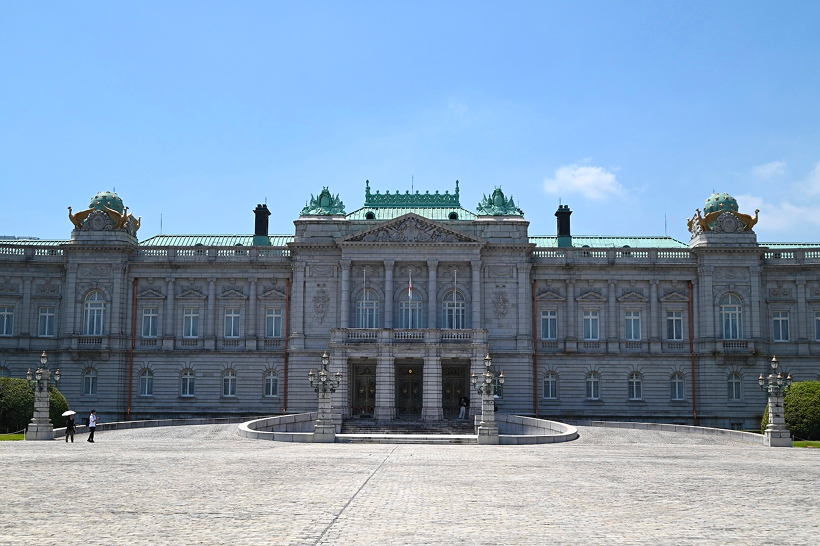

迎賓館赤坂離宮
四ツ谷

France/フランス

1909年に建設された、日本における唯一のネオ・バロック様式の迎賓館赤坂離宮。
2009年に国宝に指定された。
その荘厳さは、来訪者を感動させる。本館は撮影禁止だが、本当に本当に素敵だった。
扉の先に広がるのは、貴賓と優雅に満ちたもう一つの世界。ぜひ人生で一度は行ってみてほしい。
四ツ谷から歩いてはじめに見えるのがこの正門。
白と金で塗装されたとても華やかであり重厚な門扉。一般の見学者は正門から入る。
本館、主庭、前庭ときて、最後にあるのがこのお土産店。
左右で売っているものが異なり、思い出になりそうな品がたくさん。